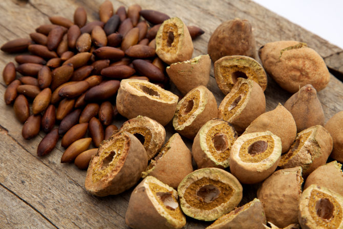
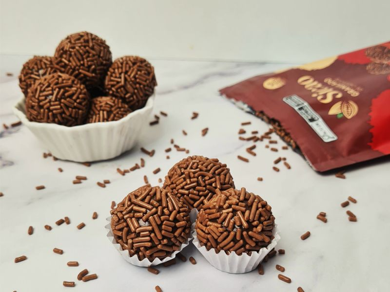

Aspectos Químicos do Baru
O baru é uma castanha nativa do Cerrado brasileiro, conhecida por seu alto valor nutricional, sendo rica em proteínas, fibras, e ácidos graxos essenciais. É uma excelente fonte de antioxidantes e pode contribuir para uma alimentação mais saudável.
Além de suas propriedades nutricionais, o baru tem ganhado destaque na gastronomia, sendo utilizado em pratos doces e salgados, como farofas, pestos e doces típicos como o brigadeiro.
Receita: Brigadeiro de Baru
Ingredientes
- 1 lata de leite condensado
- 1 colher (sopa) de manteiga
- 2 colheres (sopa) de cacau em pó
- 2 colheres (sopa) de baru moído
Modo de Preparo
- Em uma panela, leve ao fogo o leite condensado, o cacau e a manteiga.
- Mexa até que a mistura comece a desgrudar do fundo da panela.
- Retire do fogo e acrescente o baru moído.
- Deixe esfriar e faça bolinhas de brigadeiro.
- Passe as bolinhas nas castanhas de baru moídas e coloque em forminhas.
- Sirva em seguida.